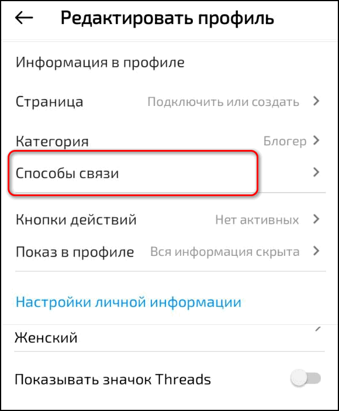
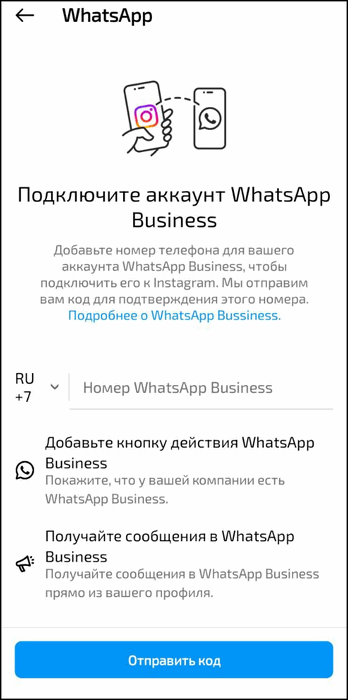
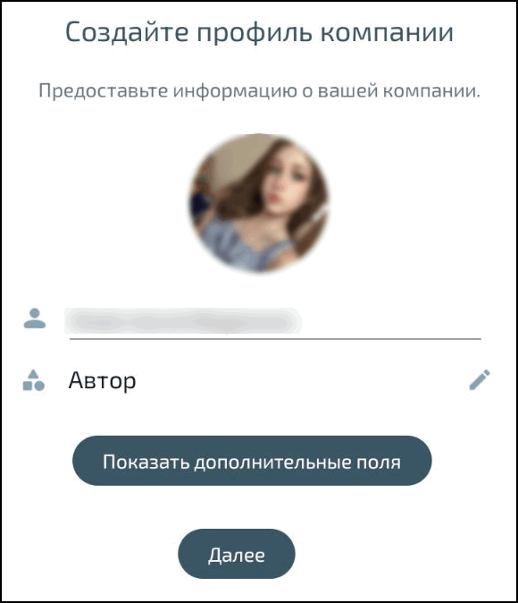
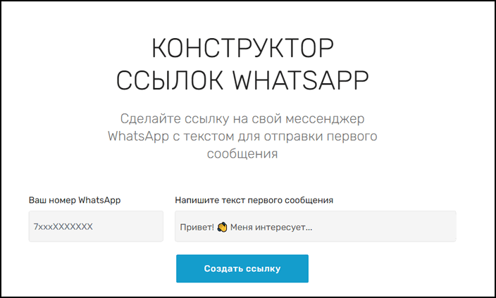
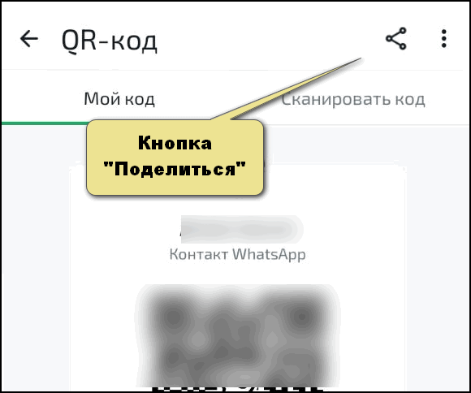
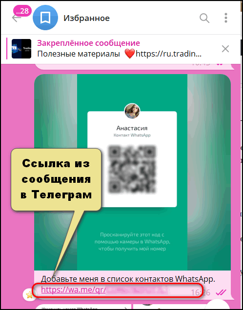
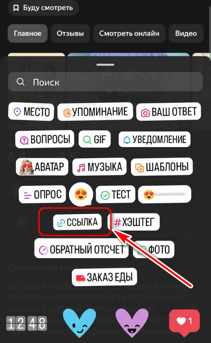
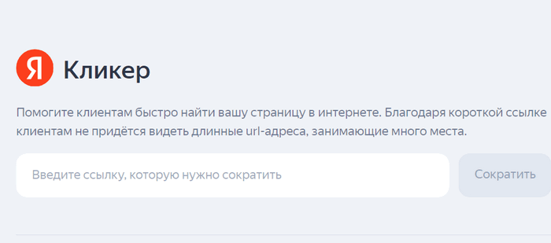
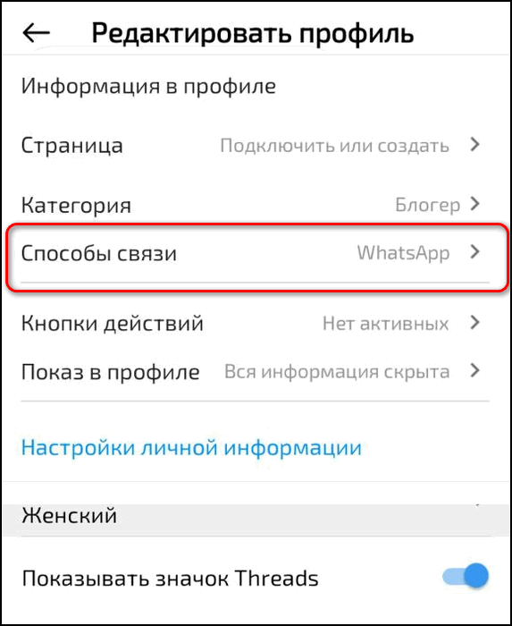
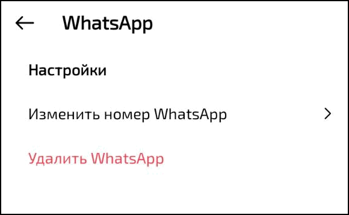

Как добавить ссылку на Ватсап в Инстаграме: бизнес и личный

В Инстаграме* вставить ссылку на свой WhatsApp стало возможным при подключении аккаунтов друг к другу. Это касается страниц со статусом «Бизнес», где есть интеграция со всеми сервисами Meta*.
Получить ссылку с WhatsApp на Инстаграм*
В мессенджере можно получить ссылку только в одном случае – если у владельца страницы есть своя группа. Тогда приглашение в чат доступно по ссылке, которая доступна к копированию. Также, есть способ с генерацией ссылки-приглашения через сайты, создание адреса в бизнес-аккаунте Инстаграма* и редактирование кода.
Сделать ссылку на Ватсап активной можно в разделах: «Сайт» или «Добавить способы связи». Мессенджер работает по принципу привязки к номеру телефона, поэтому друзья и коллеги могут отыскать вас без особых усилий – разрешив приложению доступ к телефонной книге. Или, новые пользователи или клиенты, могут вписать в поиске номер телефона и начать личный чат. Скопировать ссылку в Ватсап для Инстаграма* можно и другим способом – через QR-код, который будет сгенерирован в мессенджере. И такой вариант приглашения доступен без подключения бизнес-аккаунта.
Через WhatsApp бизнес: способ подключения
Чтобы в Инстаграм* добавить ссылку на Ватсап в шапку профиля нужно переключить аккаунт на статус «Бизнес». Причем это нужно сделать и с профилем WhatsApp*: скачать дополнительное приложение в Play Market или AppStore и пройти стандартную регистрацию. Как связать бизнес-аккаунты:
- Зайти в WhatsApp Business* - зарегистрировать новый аккаунт или подтвердить старый.

- Придумать название для компании – ввести код, который был получен на телефон.

- Создать профиль компании – заполнить основную информацию.

Далее, перейти в Инстаграм* и выбрать в описании аккаунта: «Способы связи» - WhatsApp Business*. Указать номер телефона и подтвердить привязку аккаунтов.
После успешной синхронизации нужно перейти к разделу «Редактировать профиль» - Способы связи. И выбрать вариант: «Отобразить контактную информацию», которая отображает активную кнопку.
Сделать ссылку самостоятельно
Недавно пользователи столкнулись с тем, что ссылки начинающиеся на «wa.me» не всегда срабатывают. Но даже в этом случае есть адекватное решение проблемы: используем конструкторы ссылок. Это сайты, где достаточно указать номер, за которым закреплена учетная запись, и получить активный адрес. Его же можно указать в Инстаграме* в разделе «Описание» или «Сайт». Как сделать собственный адрес на WhatsApp*:
- Перейти по адресу: Конструктор ссылок
- Указать свой номер телефона в одноименном поле и вписать текст приветственного сообщения.

- Нажать: «Создать ссылку».
Теперь, чтобы перенаправить свою аудиторию в личный чат через Instagram*, нужно перейти к редактированию профиля и вставить полученный адрес в разделе «Сайт». Ссылка кликабельная и перенаправляет на личную переписку. И существует дополнительный способ, как получить ссылку:
- Зайти в WhatsApp* - перейти в раздел: «Дополнительное меню».

- Создание QR-кода – сверху кнопка: «Поделиться».
- Выбрать в вариантах отправки Телеграм – отправить себе в Избранное.

- Появится изображение, а снизу ссылка.
Её можно скопировать и использовать для социальных сетей, установить в описании аккаунта или передать любым другим способом.
Отправить адрес в чат
Кроме того, что ссылку можно добавить в описание аккаунта, её можно разместить в Директе. Понадобится генератор ссылок, где нужно вписать свой номер телефона. Но проще поделиться номером телефона, который закреплен за аккаунтом. Еще один вариант, как отправить ссылку – сделать QR-код и в вариантах «Поделиться» выбрать: «Instagram* Direct»:
- Зайти в WhatsApp - нажать сверху три точки.
- Настройки – появятся первой строка с личными данными.
- Выбрать: «QR-код» - сделать скриншот.
- Перейти в Директ и отправить снимок в нужный чат.
Получатель должен отсканировать QR на своем устройстве, с помощью приложения Ватсап. Сканер расположен в том же разделе, где и функция с созданием своего кода.
Поделиться в Сторис или публикации
Стандартный вариант с оформлением ссылки в виде «wa.me» еще может быть открыт на компьютере. Поэтому адрес такого формата можно указать в Историях:
- Зайти в Инстаграм* - перейти к созданию Сторис.
- Выбрать фотографию – инструмент «Текст».

- Вставить начало ссылки: «wa.me/» и добавить номер телефона.
- Опубликовать.
Теперь, те кто захотят перейти к чату, могут переписать ссылку и перейти по ней в личную переписку. Или же, владельцы бизнес-аккаунтов могут использовать кнопку «Ссылка», которая доступна в стикерах. Там можно вставить адрес и указать его положение на картинке. А если владелец страницы решил добавить URL в публикации, то возможно создание только некликабельной ссылки: вписать в текст «wa.me/номер телефона» и разместить.
Сделать QR-код
Чтобы скопировать ссылку в Ватсап для Инстаграма* необязательно использовать номер. В мессенджере можно генерировать QR-кода для личных чатов и групповых. Предположим, что нам нужно пригласить потенциального клиента для уточнения подробностей или полного каталога товаров. Как сделать QR на группу:
- Зайти в свою группу в WhatsApp – нажать сверху три точки «Пригласить».
- В вариантах выбрать: «QR-код» - сделать скриншот.
Его можно использовать для публикаций, Историй и отправить в Директе. На групповые чаты можно скопировать ссылку: - перейти к дополнительным настройкам и выбрать: «Пригласить» - Скопировать. Полученным адресом можно поделиться в других социальных сетях или мессенджерах.
Сделать короткую ссылку в Инстаграме*
Разобрались с тем, как привязать Ватсап к Инстаграму* и теперь нужно отредактировать ссылку. Если она была создана с помощью комбинации «wa.me» и номера, то её можно заменить на другую. Понадобится сервис «Кликер» от Яндекса:
- Перейти на сайт clck.ru – указать ссылку от Ватсапа.
- Нажать: «Сократить» - скопировать полученный вариант.

Теперь его можно использовать в переписках, отправлять в Историях и других разделах. Пользователи, которые захотят посмотреть что находится в URL, даже не догадаются что это переход в беседу, личный чат или мини-магазин.Удалить номер из Инстаграма*
Если владельцу бизнеса активная кнопка больше не нужна, то её можно убрать или скрыть. Временно скрыть поможет функция -«Не показывать контактную информацию», а чтобы удалить полностью, нужно следовать инструкции:
- Зайти в «Способы связи» - нажать по WhatsApp*
- Появится два варианта: Удалить или изменить.

- Подтвердить удаление.

Теперь на странице не будет активных кнопок, а посетители не смогут писать личные сообщения.
Ошибки при работе с ссылками: 4 недостатка
Создавая ссылку на Ватсап в Инстаграме*, можно столкнуться с несколькими проблемами. В первую очередь, клиенты не любят работать с дополнительными сайтами и мессенджерами для общения. Обычно покупатели хотят получить ответы там же, где и находится интернет-магазин. Во-вторых: для работы с понадобится рабочий номер. Иначе неизбежать ситуаций, когда на личный станут приходить сообщения в любое время суток. К тому же, из общедоступной страницы в Инстаграме* взять информацию можно в любой момент, как и позвонить, написать СМС. Третье: нерабочая ссылка. Случается, что недоглядели или неправильно вписали адрес. Каждый потенциальный клиент в этом случае будет перенаправлен на страницу ошибки, а это уже недоверие со стороны покупателей. Четвертое – Инстаграм* нередко блокирует ссылки. Даже если это касается WhatsApp*, который относится к одной группе приложений с социальной сетью.